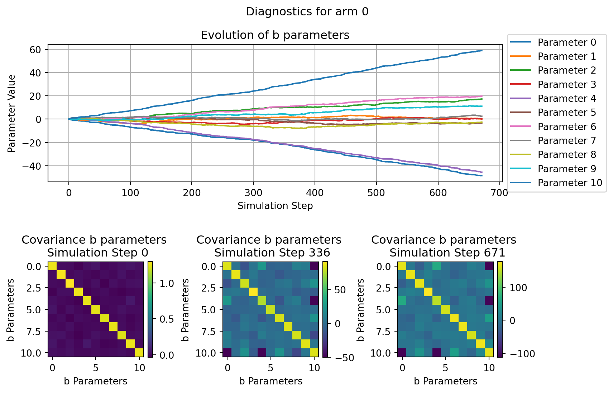
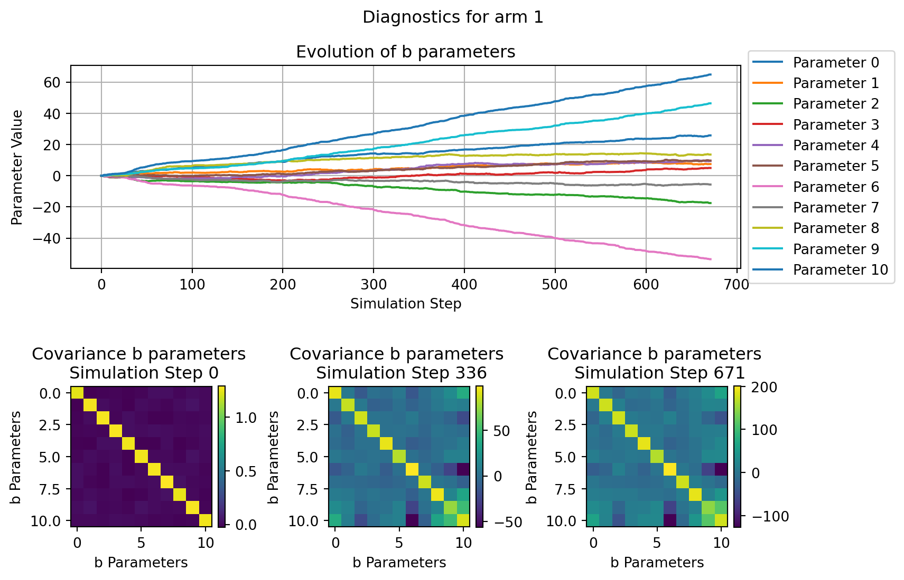
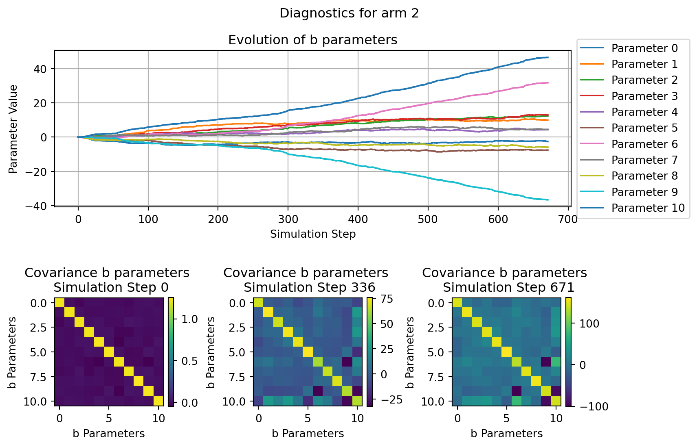
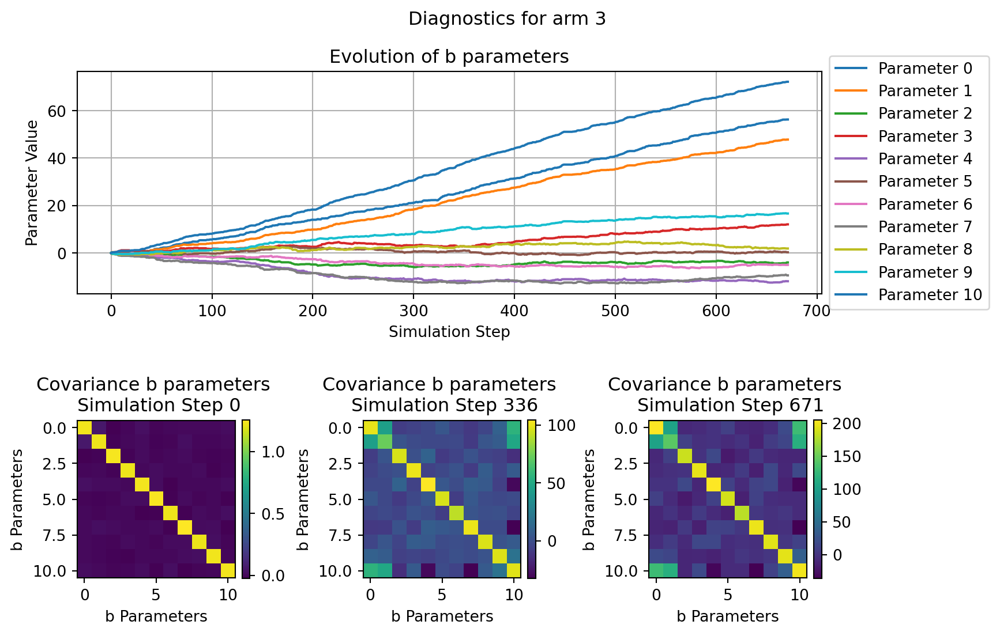

This post how to implement the Linear Upper Confindence Bound (Li et al. 2010) algorithm in JAX and applying it to a simulated contextual multi-armed bandit problem.
Published
September 10, 2023
Show supplementary code
from typing import Tuple, List, Anyfrom functools import partialimport numpy as npfrom sklearn.datasets import make_classificationfrom sklearn.linear_model import LogisticRegressionfrom sklearn.manifold import TSNEfrom jax.typing import ArrayLikefrom jax.lax import scanfrom jax import vmapfrom jax import numpy as jnpfrom jax import random, jitfrom jax.scipy.linalg import invimport matplotlib.pyplot as pltfrom matplotlib.gridspec import GridSpec@jitdef tempered_softmax(logits, temperature=1):"""Produce a tempered softmax given logits. Args: logits (ArrayLike): logits to be turned into probability. temperature (int, optional): parameter controlling the softness of the function, the higher the value the more soft is the function. Defaults to 1. Returns: ArrayLike: simplex derived from the input logits. """ nominator = jnp.exp(logits / temperature) denominator = jnp.sum(nominator, axis=1).reshape(-1, 1)return nominator / denominator
1 Premise
We want to stress how what is presented here is not at all novel but rather an exercise for leveraging the nice features that JAX offers and applying them for making the solution of a specific problem more efficient. Alot of credit for this post goes to the autohor of the original LinUCB paper, the contributors to the JAX library and to Kenneth Foo Fangwei for this very clear blogpost explaining the fundamentals of the algorithm.
1.1 What we will cover
Very brief introduction to multi armed and contextual multi armed bandit problems.
Very brief introduction to the LinUCB algorithm.
Simulating a disjoint contentual multi armed bandit problem.
Implementing the LinUCB algorithm in JAX.
Testing the algorithm on simulated data.
Accelerating testing and simulation using a GPU.
Evaluating the performance of the algorithm.
1.2 What we will not cover
JAX fundamentals.
In depth expalantion of multi-armed and contextual multi-armed bandit problems.
In depth expalantion of the LinUCB algorithm.
2 Introduction
2.1 Multi-Armed Bandit Problem
The multi-armed bandit problem describes a situation where an agent is faced with \(K = (k_0, k_1, \dots, k_n)\) different options (or arms), each one with an associated unknown payoff (or reward) \(r_k\)1(Sutton and Barto 2018).
The goal of the agent is to select, over a finite sequence of interactions \(T=(t_0, t_1, \dots, t_n)\), the set of options that will maximize the expected total payoff over \(T\)(Sutton and Barto 2018). What our agent is interested in then is the true value \(q*\) of taking an action \(a\) and selecting a given arm \(k\), the action associated with highest value should be the go-to strategy for maximizing the cumulative payoff
Since the true value is not known, our agent often has to rely on an estimate of such value which comes with an associated level of uncertainity. We can think of this in terms of the relationship between the mean of the distribution from which the rewards of a given arm are sampled and its empirical estimate with associated standard error.
Selecting the best set of actions over a finite number of interactions then requires a balance between and exploitative and explorative behaviour
Exploit the options with the highest associated estimated reward
Allow the exploration of other options in case our exploitative behaviour has been biased by noisy estimates.
2.2 Contextual Multi-Armed Bandit Problem
The conventional multi-armed bandit scenario attempts to solve what is called a nonassociative task, meaning that the payoff of a given action (e.g. selecting one of the \(k\) available arms) doesn’t depend on any context. This means that as a measure of value for a given action, we are interested in
\(\mathbb{E}[r | K=k]\)
In a contextual multi-amred bandit scenario instead, the payoff of a given action is dependent on the context in which the action is performed. This implies that given a matrix of context vectors \(X_{K\times h}\) we try to estimate the value of a given action as
\(\mathbb{E}[r | K=k, X=x_k]\)
In order to get a better understanding of what we mean here, let’s simulate a potential generating process that could give rise to data suitable for a contextual multi-armed bandit problem.
2.2.1 Create the Simulation Dataset
We will approximate the data generating process using sklearn’s make_classification function. The idea is to re-formulate this as a multi-class classification problem where the context are features able to influece the probability to pick one of n_arms classes.
In order to simulate some of the challenges we could face in a real world setting we will add the following hurdles:
Only a small portion of the fetaures will actually have predictive power on which arm is the most promising.
We will generate features that have a ceertain degree of overlap (immagine them being drawn from relatively spread-out distributions)
We will enforce sparsity on the reward generated by each arm. This is like saying that the reward generated by pulling a given arm comes from a zero inflated distribution of the form
Here we will use TSNE for projecting the multidimensional context space on a 2D plane, this should allow us to get a better intuition of what is going on. What we expect to see are separate spheres or regions (this depends on how much noise we encode in our context space) with different colouring depening on which arms they are associated with
2.3 LinUCB Algorithm for a Multi-Armed Bandit Problem
To solve a multi-armed bandit problem with context we can leverage an algorithm called Linear Upper Confidence Bound [li2010contextual] (i.e. LinUCB).
The aim of the algorithm is to progressively obtain a reliable estimate of all the options provided by the multi-armed bandit and to do so efficiently (i.e. with the smallest number of interactions.)
For doing so LinUCB simply fit a multinomial regression to the context (i.e. the covariates) provided by each arm of the bandit in order to estimate the return value associated with each arm, more formally
where \(\theta^*_k\) are the set of parameters associated with a given arm \(k\) for which the algorithm is trying to find the optimal estimate. Here we assume \(x_k\) to be invariant across all \(t \in T\) but that is not always the case.
As the number of covariates can be large we cannot know a-priori if all of them are informative or if they are collinear. For this reason LinUCB rely on a form of regularized regression called Ridge Regression. Moreover since we don’t have a datset to fit this model on but rather we refine the estimate for \(\theta^*_k\) as we interact with the arms \(K\), LinUCB utilizes what is called online learning for obtaining estimates of each interaction as given by
where \(\mathbb{X}_k\) is the design matrix \(m \times d\) where \(m\) is the number of contexts (i.e., training inputs) and \(d\) the dimensionality of each context (i.e., the number of covariates considered). Here \(\mathbb{I}\) is the \(d\times d\) identity matrix and \(r_k\) is the corresponding \(m\)-dimensional reward (or response) vector. The identity matrix (which is usually expressed with a scaling factor \(\lambda\) here implicitly set to 1.) act as a constrain on the parameter \(\theta_k\).
The adavntage of relying on the Ridge regression is that we can interpret \(\hat{\theta_k}\) a the mean of the Bayesian posterior of the parameter estimate and \(\mathbb{A}_k^-1\) its covariance. In this way we can compute the expectation for \(r_{t, k}\) as in Equation 1 and with it its associated standard deviation \(\sqrt{x_k^\intercal \mathbb{A_k}^{-1}x_k}\) which is proven to be a reasoble tight bound.
Based on this assumption then at any step \(t\) we can select the appropriate arm \(k\) to be
where \(\alpha\) becomes a constant that controls the exploration vs exploitation behaviour of the algorithm. Indeed, we can think of this as taking the value sitting at \(\alpha\) standard deviation at the right of the mean of a gaussian as most optimistic retun value when picking a certain arm. Larrger values of \(\alpha\) will therefore encourage to select arms with highest UCB even if the return is much more uncertain (as the UCB lies far away from the expected value).
The positive aspect of this is that the more an arm get selected the tighter it’s confidence bound become, up to a point in which it will become more promising to explore arms that provides larger UCB by the fact that they have simply been explored less.
3 Implementing the Algorithm
In this section we will proceeded at implementing the LinUCB algortithm, step-by-step using JAX for hardware accelaration.
3.1 Parameters Initialisation
As a first step we will need to initialize the matrices for \(X\) and \(r\) from this point onward we will call them \(A\) and \(b\) as mentioned in [li2010contextual].
def init_matrices(context_size: int) -> Tuple[ArrayLike, ...]: A = jnp.eye(N=context_size) b = jnp.zeros(shape=(context_size, 1))return A, bdef init_matrices_for_all_arms( number_of_arms: int, context_size: int, ) -> Tuple[ArrayLike, ...]: arms_A = [] arms_b = []for _ inrange(number_of_arms): A, b = init_matrices(context_size=context_size) arms_A.append(A) arms_b.append(b) arms_A = jnp.array(arms_A) arms_b = jnp.array(arms_b)return arms_A, arms_b
3.2 Computations
We will now define the code for the various computations, namely deriving the \(\theta\) and \(\sigma\) parameters. And subsequently estimating the expection for the return as well as the UCB.
The first one will allow us to cache computations that are used multiple times by the LinUCB algorithm, while the second one will allow us in this case to vectorize the computation across all the arms in our bandit problem (instead of slowly iterating through them).
/tmp/ipykernel_28353/1682972371.py:44: DeprecationWarning: The newshape argument of jax.numpy.reshape is deprecated and setting it will soon raise an error. To avoid an error in the future, and to suppress this warning, please use the shape argument instead.
context_column = jnp.reshape(a=context, newshape=(-1, 1))
/tmp/ipykernel_28353/688672908.py:13: DeprecationWarning: The newshape argument of jax.numpy.reshape is deprecated and setting it will soon raise an error. To avoid an error in the future, and to suppress this warning, please use the shape argument instead.
context_column = jnp.reshape(a=context, newshape=(-1, 1))
diagnostics_summaries = compute_policy_diagnostics_summaries( diagnostics=diagnostics["policies"])fig = plot_all_policy_diagnostics( diagnostics_summaries=diagnostics_summaries, figsize=(10, 5))plt.suptitle("Performance of LinUCB and Random Policies")plt.tight_layout()plt.show()
for arm inrange(N_ARMS): fig = plot_single_arm_parameters_dianoistics( arm=arm, diagnostics=diagnostics["parameters"], figsize=(9, 6) ) plt.show()




References
Li, Lihong, Wei Chu, John Langford, and Robert E Schapire. 2010. “A Contextual-Bandit Approach to Personalized News Article Recommendation.” In Proceedings of the 19th International Conference on World Wide Web, 661–70.
Sutton, Richard S, and Andrew G Barto. 2018. Reinforcement Learning: An Introduction. MIT press.
Footnotes
The assumption is that the payoff comes from a stationary distribution, meaning that at any point in time we can expect that \(r_k \sim \mathcal{N}(\mu_k, \sigma_k)\) (or any other suitable probability distribution).↩︎